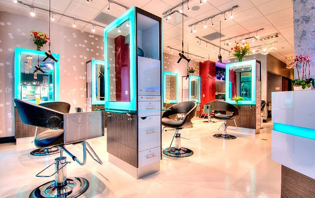

GUIA DE PREPARAÇÃO LASER E IPL
Tatuagem ou maquiagem permanente antes de laser ou IPL: o que informar?
Conte sobre tatuagens decorativas, micropigmentação, delineador ou pigmento camuflador antes de tratar a pele com luz. A presença de pigmento na área pode mudar a avaliação, mesmo quando o objetivo é outro.

Inclua pigmentos cosméticos no histórico
Informe tatuagens decorativas, delineador, pigmentação de sobrancelhas ou lábios, micropigmentação e pigmento camuflador usado sobre cicatrizes. Diga onde ficam, há quanto tempo foram feitos e se houve reação, clareamento ou retoque recente. Fotografias podem ajudar a localizar pigmentos parcialmente cobertos, mas a avaliação deve considerar a pele presencialmente.
Não presuma que uma tatuagem pequena, clara, antiga ou fora do centro da área seja irrelevante. O tipo de luz, o alvo, a distância da área e as instruções do aparelho fazem parte da decisão.
A luz pode interagir com o pigmento, mesmo quando o objetivo é outro
Laser e IPL são fontes diferentes, e cada aplicador e comprimento de onda tem uma finalidade própria. Tintas de tatuagem e pigmentos cosméticos podem absorver determinadas faixas de luz. A orientação da ARPANSA para provedores inclui tatuagem decorativa e cosmética na área tratada entre os fatores que precisam ser avaliados, e ressalta que a remoção intencional de tatuagem exige tipos específicos de laser.
Essa orientação australiana é uma referência de segurança, não uma regra brasileira nem o manual da plataforma Harmony local. A clínica precisa confirmar qual fonte, aplicador e indicação está propondo e seguir as instruções aplicáveis ao modelo específico.
Remoção de tatuagem é outra indicação
Equipamentos a laser para remoção de tatuagem selecionam comprimentos de onda para interagir com cores específicas de tinta. Isso não significa que uma plataforma de IPL para outra finalidade remova tatuagens; autoridades de saúde alertam que IPL não é indicado para remoção de tinta e pode causar lesão quando usado fora do propósito previsto.
Não peça para a equipe “passar por cima” de um pigmento, nem tente cobri-lo com maquiagem ou um curativo para a sessão sem instruções. Pergunte qual área será tratada, qual orientação o fabricante dá para tatuagens e pigmento cosmético e se a proposta precisa ser modificada, delimitada ou adiada.
O que perguntar antes de consentir
- Qual é o objetivo do tratamento e qual modalidade, aparelho, aplicador e filtro serão usados?
- Como tatuagem, micropigmentação ou maquiagem permanente na área afetam a elegibilidade?
- O manual do modelo usado pela clínica tem orientação específica para pigmento no campo de tratamento?
- Como a equipe vai identificar e manejar a área pigmentada sem prometer que qualquer método de cobertura seja seguro?
- Quais sinais após a sessão justificam contato ou avaliação médica, e qual canal devo usar?
Se a resposta sobre o aparelho ou sobre o pigmento na área não estiver clara, aguarde a equipe esclarecer a proposta antes de iniciar. Uma plataforma com vários aplicadores não torna as modalidades intercambiáveis.
Referências e limites
- ARPANSA: orientação de segurança para provedores de laser e IPL — inclui tatuagens cosméticas e decorativas na área de tratamento na avaliação de risco; referência australiana, não protocolo local.
- Queensland Health: remoção de tatuagem — explica que remoção exige lasers específicos e que IPL não é destinado a esse objetivo.
- FDA: opções e resultados de remoção de tatuagem — fonte norte-americana sobre remoção, riscos e limites de métodos caseiros; não confirma indicações brasileiras.
A modalidade, o modelo, o aplicador, o filtro e as instruções locais para tatuagens precisam ser confirmados pela profissional responsável antes do atendimento. Este conteúdo não determina elegibilidade nem substitui avaliação individual.